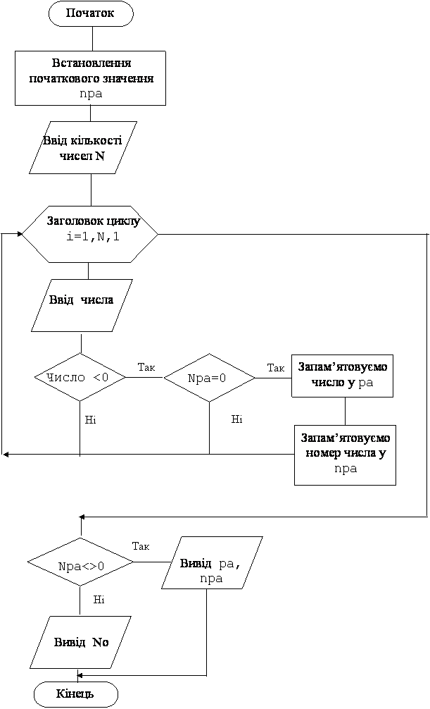

Назад
Зміст
Вперед
Задачі на пошук першого та останнього чисел з заданою властивістю
За даним алгоритмом можна з декількох чисел (символів) знаходити перші (останні) числа (символи) з будь-якою властивістю.
Правило
|
При складанні програм на знаходження першого або останнього числа з заданою властивістю з декількох чисел, потрібно пам’ятати:
- Тип першого (останнього) числа співпадає з типом чисел, серед яких його обирають
- Тип порядкових номерів завжди цілий
- Перед циклом потрібно присвоїти початкове значення, що дорівнює 0 змінній в який буде знаходитись порядковий номер шуканого числа.
- У циклі, for i:=1 to n do
- Вводиться наступне число a
- Це число a та його порядковий номер запам’ятовують якщо:
- Для знаходження першого числа – введене число a відповідає вказаній властивості та є першим з таких чисел (порядковий номер шуканого числа дорівнює 0)
- Для знаходження останнього числа – для всіх чисел a, що відповідають вказаній властивості
- якщо введене число a не відповідає вказаній властивості, то значення a та його порядковий номер не запам’ятовують.
- Після завершення циклу знайдені значення виводяться на екран.
|
Приклад 1
Ввести з клавіатури n будь-яких символів. Знайти серед цих символів останню маленьку латинську голосну літеру та її порядковий номер. Якщо таких літер немає, то вивести No.
Результат роботи програми
| Вивід | Вивід | Пояснення |
|---|
6
f
a
4
i
o
p | o 5 | Перше число 6 це кількість символів.
Наступні символи мають порядкові номери:
f – 1, a – 2, 4 – 3, i – 4, o – 5, p –6.
Серед цих шести символів голосних три.
Перша a має порядковий номер 2.
Друга i має порядковий номер 4.
Третя o має порядковий номер 5.
Нам потрібна остання, з порядковим номером 5.
|
3
S
R
t
| NO | |
Змінні:
Вхідні:
- n – кількість символів (цілого типу)
- a – символ (символьного типу, за умовою)
Вихідні:
- ost –останній голосний (символьного типу, тому що a символ).
- nost – порядковий номер останнього голосного (номери завжди цілого типу)
Проміжні:
- i – параметр циклу, порядковий номер введеного символу (завжди цілого типу)
Алгоритм
- Спочатку потрібно ввести кількість символів оператором readln(n).
- Потім потрібно встановити початкове значення змінній nost. Будемо вважати, що голосних літер немає, тому nost:=0. Якщо зустрінемо голосну літеру, то у цю змінну будемо запам’ятовувати її порядковий номер.
- У циклі for i:=1 to n do у операторних дужках будемо виконувати такі дії :
- Оператор readln(a) вводить наступний символ у змінну a.
- Якщо введено голосну літеру, то запам’ятовуємо її у змінну ost оператором ost:=a і її порядковий номер у змінну nost оператором nost:=i. Кожна наступна голосна літера затирає попередні значення у цих змінних.
- Якщо введене не маленьку голосну латинську літеру, то нічого не робимо, тобто значення ost та nost не змінюється.
- Коли цикл закінчиться, тобто будуть введені всі n символів, у змінних ost та nost залишаться значення для останньої голосної літери. Якщо голосних літер не було, значення nost не зміниться і nost=0
- Перевіряємо nost:
- Якщо nost<>0, то виводимо на екран знайдені значення змінних оператором writeln(ost,' ',nost)
- У протилежному випадку виводимо writeln('NO').
Програма
var i,n,nost:integer;a,ost:char;
begin
readln(n);nost:=0;
for i:=1 to n do
begin
readln(a);
if (a='a')or(a='e')or(a='u')or(a='i')or(a='o')
then begin ost:=a; nost:=i; end;
end;
if nost<>0 then writeln(ost,' ',nost)
else writeln('NO');
end.
|
Трасування програми
У приведеній нижче таблиці для нашого прикладу проводиться „трасування” програми, тобто програма виконується по крокам, вказуються оператори, що виконуються та відповідні зміни значень змінних.
| Оператор | Пояснення | n | ost | nost | i | a |
|---|
| readln(n) | Ввід кількості символів | 6 | | | | |
| nost:=0 | Початкове значення | | | 0 | | |
| i:=1 | Заголовок циклу | | | | 1 | |
| readln(a); | Ввід наступного символу | | | | | f |
| If (a='a') or (a='e') or (a='u')or(a='i')or(a='o') | Невірно, бо f | | | | | |
| i:=2 | Заголовок циклу | | | | 2 | |
| readln(a); | Ввід наступного символу | | | | | а |
| If (a='a') or (a='e') or (a='u')or(a='i')or(a='o') | Вірно, бо а | | | | | |
| ost:=a; nost:=i; | Виконуються, бо вірно | | а | 2 | | |
| i:=3 | Заголовок циклу | | | | 3 | |
| readln(a); | Ввід наступного символу | | | | | 4 |
| If (a='a') or (a='e') or (a='u')or(a='i')or(a='o') | Невірно, бо 4 | | | | | |
| i:=4 | Заголовок циклу | | | | 4 | |
| readln(a); | Ввід наступного символу | | | | | і |
| If (a='a') or (a='e') or (a='u')or(a='i')or(a='o') | Вірно, бо і | | | | | |
| ost:=a; nost:=i; | Виконуються, бо вірно | | і | 4 | | |
| i:=5 | Заголовок циклу | | | | 5 | |
| readln(a); | Ввід наступного символу | | | | | о |
| If (a='a') or (a='e') or (a='u')or(a='i')or(a='o') | Вірно, бо о | | | | | |
| ost:=a; nost:=i; | Виконуються, бо вірно | | о | 5 | | |
| i:=6 | Заголовок циклу. Останній виток. | | | | 6 | |
| readln(a); | Ввід наступного символу | | | | | р |
| If (a='a') or (a='e') or (a='u')or(a='i')or(a='o') | Невірно, бо р | | | | | |
| if nost<>0 | Вірно, бо 5 | | | | | |
| writeln(ost,' ',nost) | Вивід отриманих значень | | | | | |
Приклад 2
Ввести з клавіатури n дійсних чисел. Знайти серед цих чисел перше від’ємне число та його порядковий номер. Якщо від’ємних чисел немає, то вивести NO.
Результат роботи програми
| Ввід | Вивід | Пояснення |
|---|
4
8 -3 7 -2 | -3.0 2 |
Перше число 4 це кількість чисел.
Числа мають порядкові номери:
8 – 1, -3 – 2, 7 – 3, -2 –4.
Серед цих чотирьох чисел від’ємних два.
Перше -3 має порядковий номер 2.
Друге -2 має порядковий номер 4.
Нам потрібно перше, з порядковим номером 2.
|
3
8 5 3 | No | Від’ємних чисел немає |
Змінні:
Вхідні:
- n – кількість чисел (цілого типу)
- a – число (дійсного типу, за умовою)
Вихідні:
- pa–перше від’ємне число (дійсного типу типу, тому що a дійсне).
- npa– порядковий номер першого від’ємного числа (номери завжди цілого типу)
Проміжні:
- i – параметр циклу (цілого типу)
Алгоритм
- Спочатку потрібно ввести кількість чисел оператором read(n).
- Потім потрібно встановити початкове значення змінній npa. Будемо вважати, що від’ємних чисел немає, тому npa:=0. Якщо зустрінемо перше від’ємне число, то у цю змінну будемо запам’ятовувати його порядковий номер.
- У циклі for i:=1 to n do у операторних дужках будемо виконувати такі дії:
- Оператор read(a) вводить наступне число у змінну a.
- Якщо введено перше (npa=0) від’ємне (a < 0) число, то запам’ятовуємо його значення у змінну pa оператором pa:=a і його порядковий номер у змінну npa оператором npa:=i.
- Якщо введене не перше від’ємне число або не від’ємне число, то нічого не робимо, тобто значення npa та pa не змінюється.
- Коли цикл закінчиться, тобто будуть введені всі n чисел, у змінних pa та npa залишаться значення для першого від’ємного числа. Якщо від’ємних чисел не було, значення npa не зміниться і npa=0
- Перевіряємо npa:
- Якщо npa <>0, то виводимо на екран знайдені значення змінних оператором writeln(pa:1:1,' ',npa)
- У протилежному випадку виводимо writeln('NO').
Блок–схема програми

Програма
var i,n,npa:integer;a,pa:real;
begin
read(n);npa:=0;
for i:=1 to n do
begin
read(a);
if (a < 0)and(npa=0) then
begin npa:=i;pa:=a;end;
end;
if npa<>0 then writeln(pa:1:1,' ',npa)
else writeln('NO');
end.
|
Варіанти задач
- Ввести з клавіатури n цілих чисел. Знайти серед цих чисел перше парне число та його порядковий номер. Якщо парних чисел немає, то вивести NO.
- Ввести з клавіатури n цілих чисел. Знайти серед цих чисел останнє непарне число та його порядковий номер. Якщо непарних чисел немає, то вивести NO.
- Ввести з клавіатури n цілих чисел. Знайти серед цих чисел перше число, що закінчується цифрою 0 та його порядковий номер. Якщо таких чисел немає, то вивести NO.
- Ввести з клавіатури n цілих чисел. Знайти серед цих чисел останнє число, що закінчується цифрою 7 та його порядковий номер. Якщо таких чисел немає, то вивести NO.
- Ввести з клавіатури n цілих чисел. Знайти серед цих чисел перше число , що кратно 3 та закінчується на цифру 5 та його порядковий номер. Якщо таких чисел немає, то вивести NO.
- Ввести з клавіатури n цілих чисел. Знайти серед цих чисел останнє число, що кратно 2 і не кратно 3 та його порядковий номер. Якщо таких чисел немає, то вивести NO.
- Ввести з клавіатури n дійсних чисел. Знайти серед цих чисел перше число, що більше 100 та його порядковий номер. Якщо таких чисел немає, то вивести NO.
- Ввести з клавіатури n дійсних чисел. Знайти серед цих чисел останнє число, що менше 10 та його порядковий номер. Якщо таких чисел немає, то вивести NO.
- Ввести з клавіатури n будь-яких символів. Серед них є декілька символів „*”. Знайти порядковий номер першої зірочки. Якщо зірочок немає, то вивести NO.
- Ввести з клавіатури n будь-яких символів. Серед них є декілька символів „*”. Знайти порядковий номер останньої зірочки. Якщо зірочок немає, то вивести NO.
- Ввести з клавіатури n дійсних чисел. Знайти серед цих чисел перше число, що належить інтервалу [-10, 10] та його порядковий номер. Якщо таких чисел немає, то вивести NO.
- Ввести з клавіатури n дійсних чисел. Знайти серед цих чисел останнє число, що належить інтервалу [5, 15] та його порядковий номер. Якщо таких чисел немає, то вивести NO.
- Ввести з клавіатури n будь-яких символів. Серед них є декілька цифр. Знайти порядковий номер першої цифри. Якщо цифр немає, то вивести NO.
- Ввести з клавіатури n будь-яких символів. Серед них є декілька великих російських літер. Знайти порядковий номер останньої такої літери. Якщо таких літер немає, то вивести NO.
- Ввести з клавіатури дійсне число x та n будь-яких дійсних чисел. Чи є серед цих n чисел число x? Якщо є, то вивести порядковий номер першого числа x. Якщо такого числа немає, то вивести NO.
- Ввести з клавіатури число дійсне x та n будь-яких дійсних чисел. Чи є серед цих n чисел число x? Якщо є, то вивести порядковий номер останнього числа x. Якщо такого числа немає, то вивести NO.
Назад
Зміст
Вперед